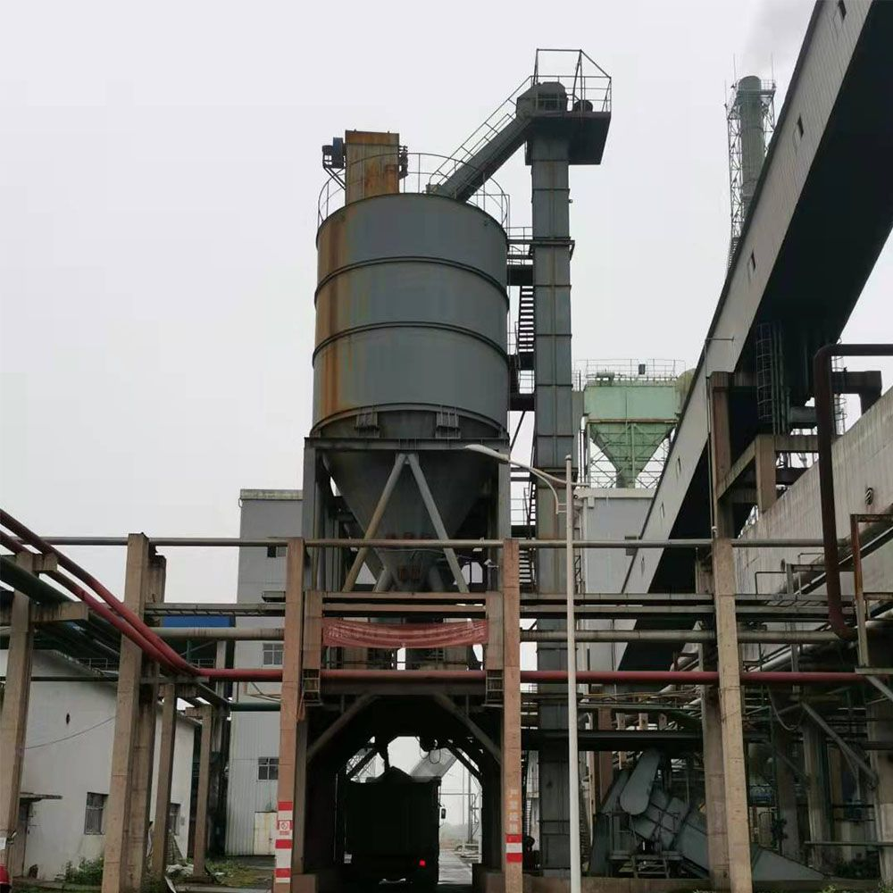

A bucket elevator moves material vertically in a confined, often dusty space — which makes a disciplined inspection routine not just good practice, but a safety requirement. This checklist splits the work into daily, weekly, and monthly tasks so nothing slips through the cracks.
In this guide
Why a routine matters Daily inspection Weekly inspection Monthly inspection Safety & explosion protectionWhy a Routine Matters
On a belt-and-bucket elevator, a single failed bucket or a slipping belt can cascade into a full casing clean-out and days of downtime. Most failures announce themselves early — through noise, vibration, or temperature — if someone is looking. The cadence below catches issues while they are still cheap to fix.
Daily Inspection (operator, start of shift)
- Listen: Walk the elevator during startup. A change in pitch, rhythmic knocking, or scraping means a bucket is loose or the belt is tracking off.
- Check the boot: Look for material accumulation at the tail (boot) section. Build-up here is the #1 cause of belt slip and derailment.
- Watch the discharge: Confirm material is discharging cleanly at the head and not dribbling back down the down-leg.
- Glance at bearings: Head-shaft and foot-shaft bearing temperature should be steady and cool to the touch (or within trend). A sudden hot spot is an early warning.
Weekly Inspection (maintenance tech)
- Belt tension & alignment: Check take-up position. Excessive take-up travel means the belt has stretched — re-tension before it slips.
- Buckets: Inspect for cracks, bent lips, or missing bolts. Replace damaged buckets promptly; a broken bucket thrown at speed damages the casing.
- Drive: Verify motor amps against the nameplate. A rising amp trend signals increasing friction or a loading imbalance.
- Speed monitor & slip switch: Function-test the belt-speed monitor and zero-speed switch — these are your automatic trip devices.
Monthly Inspection (supervisor / engineer)
- Belt condition: Inspect the belt for edge wear, ply separation, and elongation. Record take-up position to track stretch rate over time.
- Head & boot pulleys: Check lagging wear and shaft seals. Confirm the boot clean-out door and any tramp-removal device are working.
- Structural: Check casing for corrosion, bolt loosening, and any belt-to-casing rub marks. Tighten structural fasteners to spec.
- Lubrication: Grease head/foot bearings per schedule. If your site is dusty, consider sealed, greased-for-life bearings.
| Interval | Focus | Red flag |
|---|---|---|
| Daily | Noise, boot build-up, discharge | New knocking or scraping sound |
| Weekly | Belt tension, buckets, drive amps | Loose or cracked bucket |
| Monthly | Belt wear, pulleys, structure | Rub marks on casing, rising amps |
Safety & Explosion Protection
For combustible powders (grain, coal, some chemicals), the elevator is a primary dust-explosion risk. Your inspection must include:
- Intact explosion vent panels on the casing — never obstruct or disable them.
- Functioning rotary feeders / airlocks at the inlet to limit oxygen and flame propagation.
- Housekeeping: the boot and surrounding floor kept clear of settled dust.
- Confirm temperature and bearing monitors are wired to trip, not just alarm.

Bucket ElevatorNeed an Elevator Health Check?
Tell us your model, material, and duty — we'll help you build a maintenance schedule and supply the right spare buckets, belts, and bearings.
Request Support